Архитектура Петропавловска
Петропавловск – город удивительный. У него свой дух, своя харизма, его
можно узнать из тысячи других.
Его оригинальности не мешают стандартные «панельки» 60-х и
монументальные здания 2000-х. Город любим горожанами, и это чувствуется сразу – он ухожен, красив, величав.
Сводка по зданиям (нажми на меня)
- Комплекс зданий областного историко-краеведческого музея
- Белый дом Абылая
- Здание Северо-Казахстанского акимата
- Здание государственного архива
- Дом политического просвещения
- Северо-Казахстанский областной казахский музыкально-драматический театр им. С. Муканова
- Здание электротеатра «Новый свет»
- Здание кинотеатра «Казахстан»
- Здание мечети Янгуразова «Кызылжар»
- Здание Покровского собора (бывшая Покровская церковь, ныне храм Св. Петра и Павла)
- Здание костела
- Дом купца Юзефовича
- План крепости Святого Петра
- Здание железнодорожного вокзала
- Водонапорная башня
- Здание административное Северо-Казахстанского облисполкома
- Педагогическая училище
- АО "Завод им. С.М. Кирова"
- Здание водокачки
- Здание городской электрической станции
- Романовское училище
- Здание мельницы Мазаева
- Итог
Комплекс зданий областного историко-краеведческого музея

Фото конца 20 века и наше время
Расположен по улице Ленина, 48. Областной историко-краеведческий музей. Создан в 1924 году.
Белый дом Абылая
 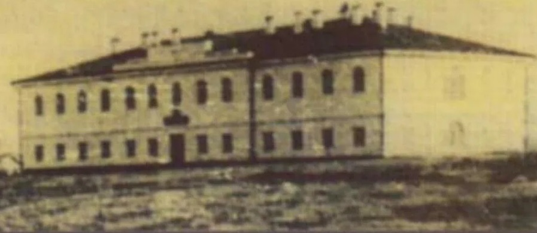
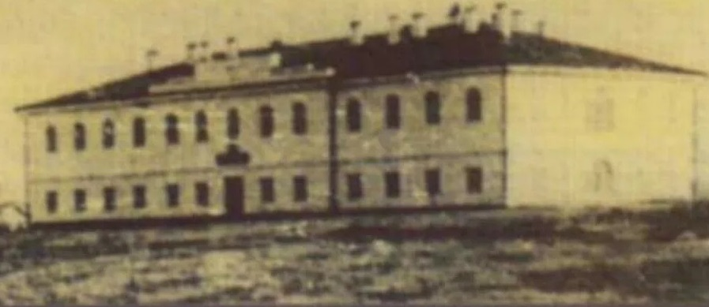
Фото 2008 / 1829 года
1829 год. Расположен по улице Театральной. Здание построено в 1829 году из кирпича, на кирпичном же фундаменте и, вплоть до 1917 года, использовалось для размещения военного лазарета. В советское время в доме размещалась военная казарма. Первый этаж использовался как подсобные помещения, второй - как жилые помещения. В настоящее время, по решению областного акимата, здание отреставрировано и в нем, а также на прилегающей территории, создан музеефицированная ставка Абылай-хана. Комплекс введен в действие в 2008 году.
Здание Северо-Казахстанского акимата
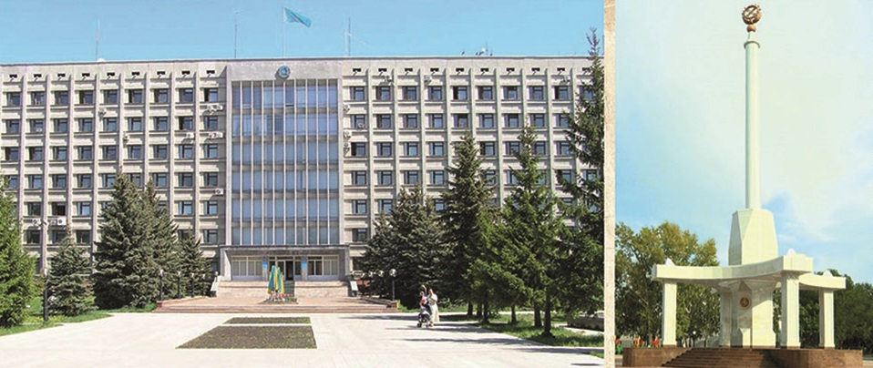
Фото 1980 года
Создана по проекту коллектива института "Севгражданпроект" города Петропавловска. Расположено на улице Конституции Казахстана.
Здание государственного архива
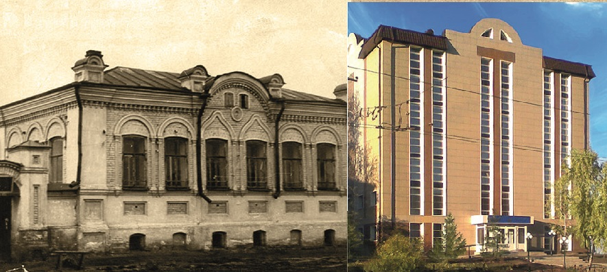
Фото 1958 года / наше время
Хранит множество разной информации. С 1974 года облгосархив находится по улице Интернациональной, 1.
Дом политического просвещения
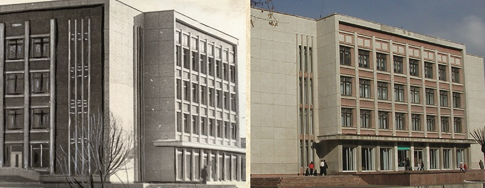
Фото 1980 года / наше время
Расположен по улице Конституции Казахстана, 60. Здание введено в эксплуатацию в 1980 году. Проект разработан институтом «Укргорстройпроект» в 1969 году для города Полтавы и переработан институтом «Севгражданпроект» для условий города Петропавловска. Здание размещено на центральной пешеходной улице и является одной из построек новой административной площади города.
Северо-Казахстанский областной казахский музыкально-драматический театр им. С. Муканова
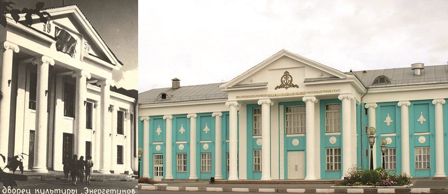
Фото 1986 (но архитектура 1956) года / наше время
Расположен по улице Жамбыла Жабаева, 195. Построен в 1956 году, как дворец культуры. В 2002 году, после окончания реставрационных работ, технической реконструкции и приспособления здания, в нем был открыт Северо-Казахстанский областной казахский музыкально-драматический театр им. С. Муканова.
Здание электротеатра «Новый свет» (кинотеатр "Ударник")
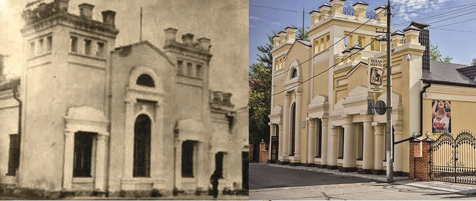
Архитектура 1908 года / наше время
Расположено по улице Казахстанской правды, 91.
Здание кинотеатра «Казахстан»

Фото 1980 года / начало XX1 века.
Расположено по улице Интернациональная, 66. Здание кинотеатра построено в 1978 году. Открытие состоялось 15 ноября 1978 года.
Здание мечети Янгуразова «Кызылжар»
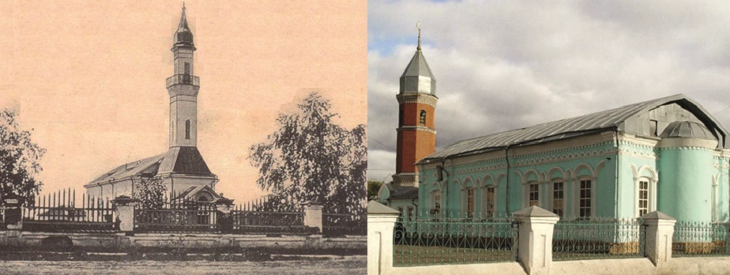
Архитектура 19 века
Расположено на пересечении улиц Ж. Жабаева и Ульянова. Построена в 19 веке купцом Халитом Янгуразовым. Наиболее ценными элементами сооружения являются гл. корпус, фасад, минарет (в 1936 разрушен, в 1996 восстановлен).
Здание Покровского собора (бывшая Покровская церковь, ныне храм Св. Петра и Павла)
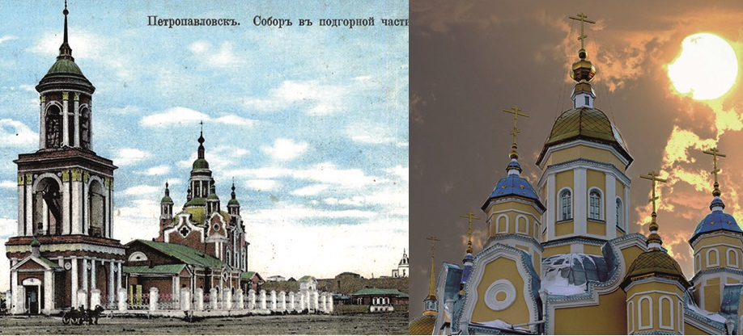
Архитектура 1813 года / наше время
асположено по улице Коминтерна, 37. 18 октября 1803 года, в подгорной части города Петропавловска, была заложена каменная Покровская церковь. В 1812 году она была разобрана до основания и, на том же месте, по вновь составленному плану, с большим изменением, 22 октября 1813 года, заложена новая каменная церковь с тремя пределами: Покровским, Никольским и Петровским, которые были последовательно освящены 22 октября 1815 года.
Здание костела
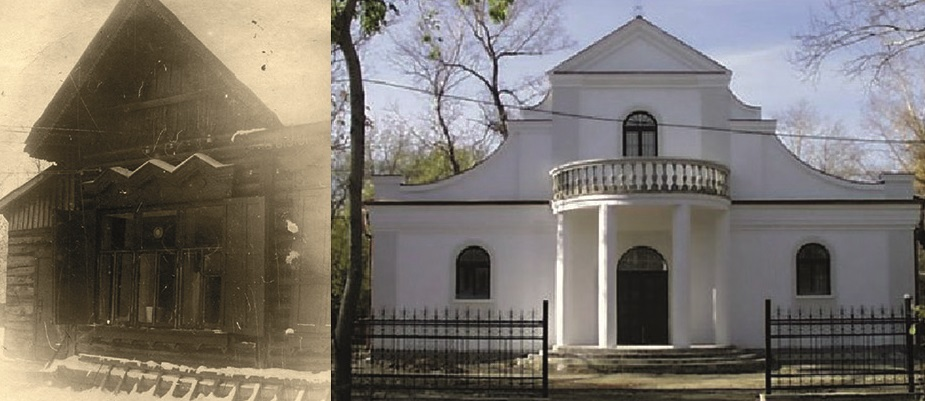
Фото 1976 года, архитектура начала XX века / начало XX1 века.
Расположено по улице Конституции Казахстана, 43. Выстроено в начале XX века (предположительно, в 1911 году).
Дом купца Юзефовича
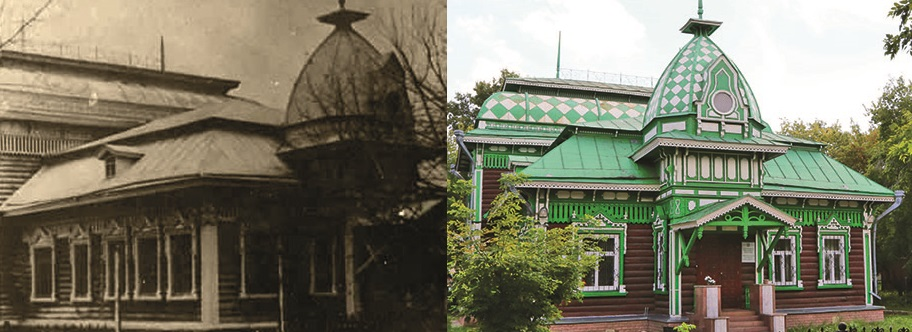
Начало ХХ века / наше время
Расположен по улице 314-й стрелковой дивизии, 83. Здание постройки 1909 года. Заказчик купец-лесопромышле-нник А.Г. Юзефович.
План крепости Святого Петра
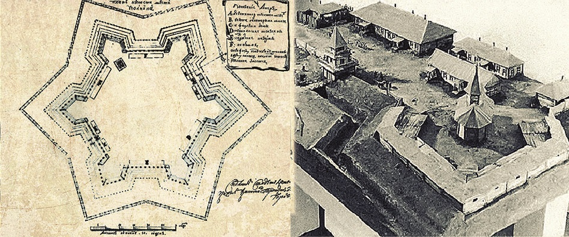
Фотокопия второй половины XVIII века.
Важнейший военно-стратегический пункт России в Западной Сибири. В XIX веке главная крепость Новоишимской (Горькой) линии, возведенной в середине XVIII века на казахской территории против экспансии Джунгарии, Китая, Коканда и разорительных набегов кочевников, для защиты восточных границ Российской империи.
Здание железнодорожного вокзала
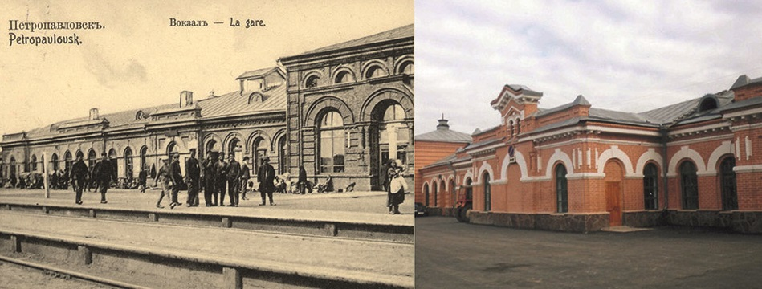
Архитектура 1895, 1904 года. Фото начало ХХ / начало XXI вв.
Расположен на Привокзальной площади. Здание железнодорожного вокзала строилось в два этапа: строительство первой очереди было закончено в декабре 1895 года; вторая очередь здания (ресторан, вспомогательные службы железнодорожной станции) завершена в 1904 году.
Водонапорная башня
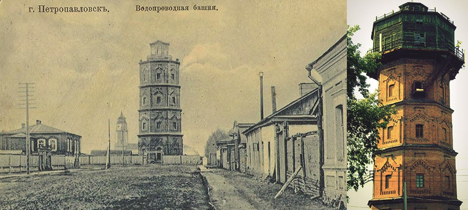
Фото 1905 года / наше время
Расположено по улице Брусиловского (угол улицы Амангельды). К сооружению городского водопровода приступили в 1901 году. Прокладка его основных магистралей, постройка водона- порной башни, были произведены в 1902 году. В основу сооружения водопровода положены задачи обслуживания города на случай пожара.
Здание административное Северо-Казахстанского облисполкома
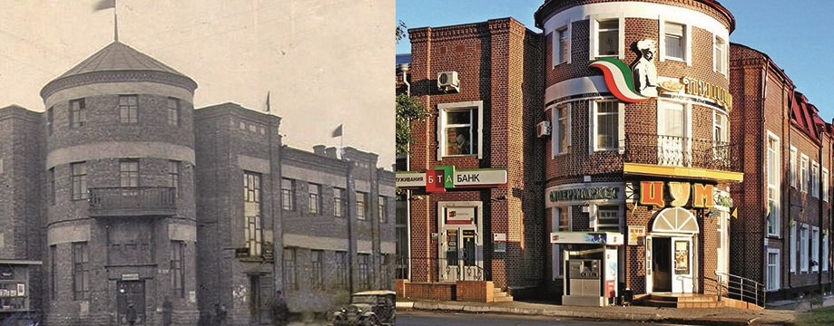
Фото 1984 года / начало 21 века
Здание построено в 30-е годы ХХ века, на бутовом фундаменте 1915 года, предназначавшегося для сооружения корпуса Сибирского акционерного народного банка. В 30-е годы здесь размещался Северо-Казахстанский облисполком. В 70-е годы в здании находился трест столовых и ресторанов, столовая, редакция газеты «Ленинское знамя». В настоящее время оно отреставрировано и в нем размещены торговые площади частного центрального универмага и супермаркета.
Педагогическая училище
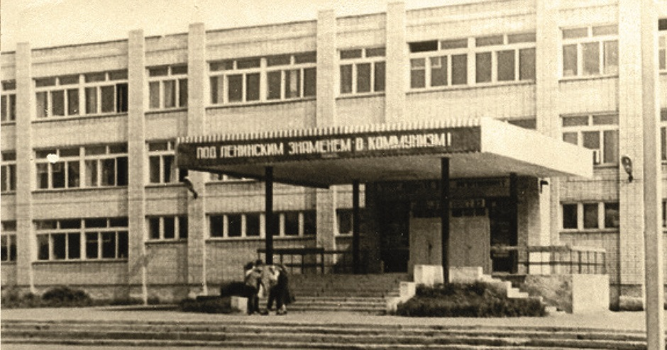
Фото 1982 года
Архитектура 1920 года. Расположен по улице Абая. Гуманитарный Петропавловский колледж им. М. Жумабаева.
АО "Завод им. С.М. Кирова"
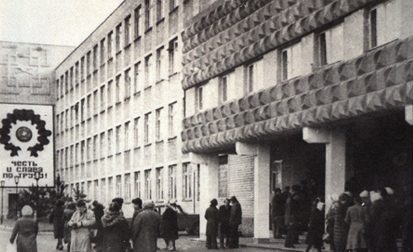
Фото 1987 года
Архитектура 1942 года. Расположен по улице Мира.
Здание водокачки
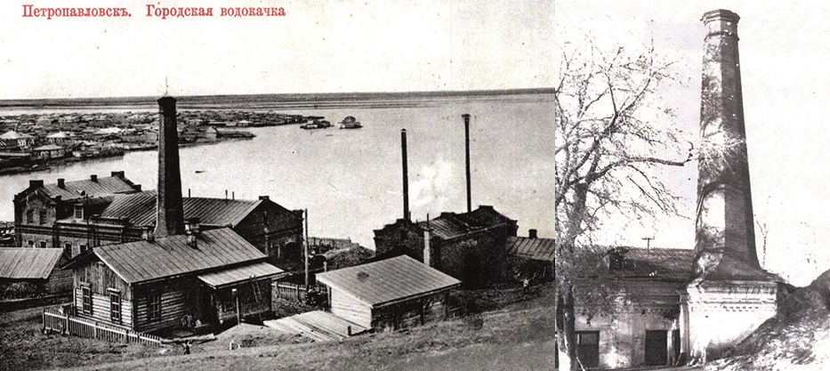
Фото начала 20 века
Архитектура 1902 года. Расположено по улице Ущева, 2. Здание построено в 1902 году. Эксплуатируется с января 1903 года.
Здание городской электрической станции
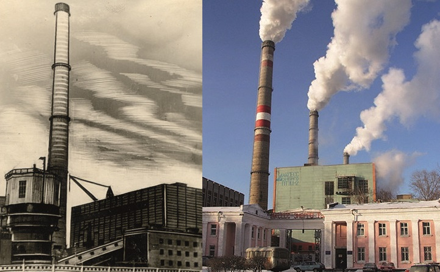
Фото 1961 года. / начало XX1 века.
Архитектура начало ХХ века. Здание электростанции построено по улице Советская (ранее Банковская), на пересечении с улицей Брусиловского (ранее Пролетарская, еще ранее - Полицейская) в начале ХХ века. С 1913 года в одноэтажном здании находилась первая в городе электростанция.
Романовское училище
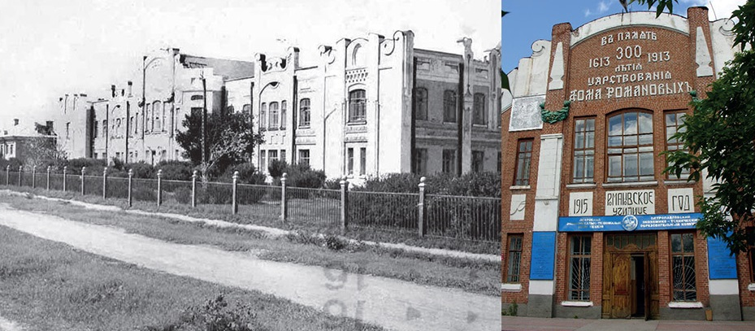
Фото 20 века / наше время
Архитектура 1915 года.
Расположено по улице Театральная, 42. Архитектор С.А. Гранильщиков. В 1913 году по разрешению Городской управы, в честь трехсотлетия дома Романовых, было начато строительство город- ского училища, постройка которого была завершена в 1915 году.
Здание мельницы Мазаева
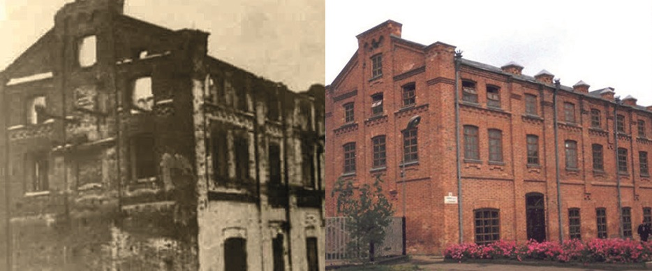
Фото 20 века / наше время
Архитектура 1913 года.
Расположено по улице Конституции Казахстана (угол улицы Осипенко). Мельница построена Гаврилой Ивановичем Мазаевым в 1913 году.
Итог
Памятники архитектуры относятся к различным архитектурным стилям, т.к. сооружались в разное время и по разному назначению.
Одна-ко для всех памятников характерны: малая полезная площадь, обширная застройка и значительная емкость подсобных и складских помещений. Многочисленные объекты имеют привлекательную художественно-декоративную отделку: военный лазарет («Абылайдың ақ үйi» Белый дом Абылая), усадьба купца В.Т. Светлинского, здание полицейского участка, торговый дом Шамсутдинова, Романовское училище, комплекс зданий областного историко-краеведческого музея (дома купцов Аркеля, Стрелова, Дмитриева и др.). Примечательны памятники архитектуры произ-водственного назначения: мельница Муратова, мельница Полякова, локомотивное депо, водонапорная башня, водокачка, старый вокзал станции Петропавловск и др. Из здании архитектуры культового назначения охраняются: Покровский (Св. Петра и Павла) собор, мечети Халита Янгура-зова, Дин-Мухаммеда. В стилевом отношении, памятники архитектуры Петропавловска, не представляют какого-либо определенного ярко вы-раженного архитектурного направления.
Во многих случаях они вобрали в себя лишь некоторые элементы ранее существующих различных стилей, которые были органично соединены и воплощены, создав при этом своеобразный и неповторимый облик провинциального купеческого города.
Облик сегодняшнего города формировался в условиях реконструкции его старых улиц и площадей. Дома, имевшие историческую и архитектурную ценность, богато украшенные деревянной резьбой и лепниной, по¬старались сберечь.
Многие из них уже отреставрированы и продолжают украшать город, придавая ему неповторимый колорит.